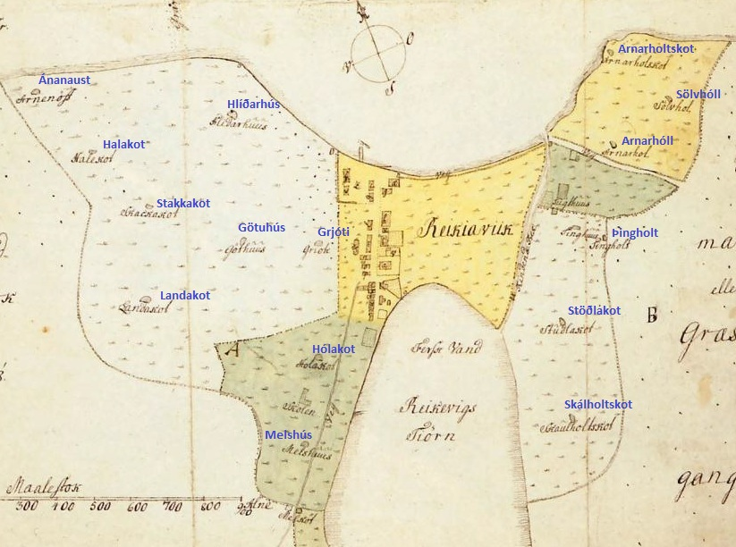
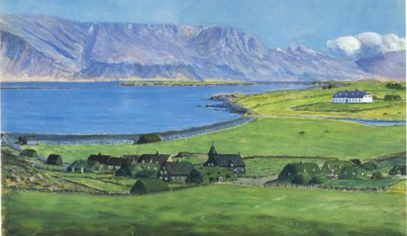
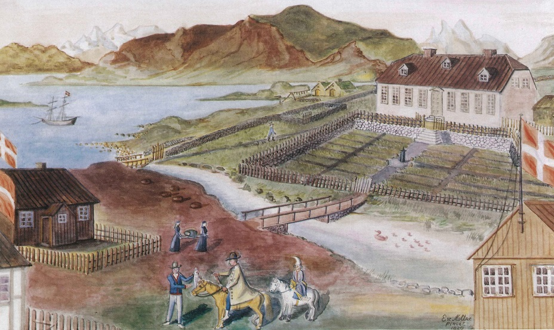
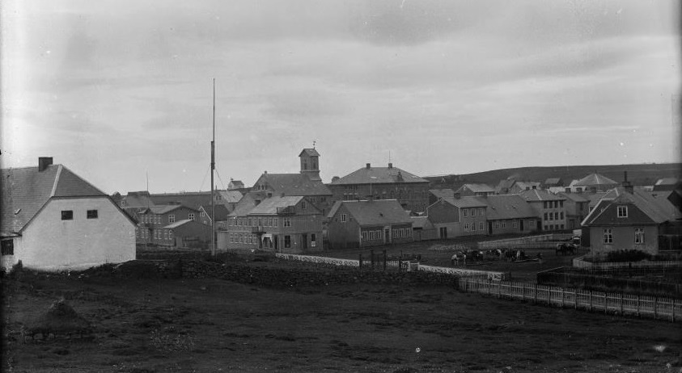

1787
Álitið er að búið hafi verið á Arnarhóli nánast frá landnámi.
Sú ályktun hefur m.a. verið dregin af þykkum mannvistarlögum, sem
eru á stórum hluta hólsins. Elsta byggðin mun vera frá því fyrir
árið 1226 því hún er eldri en gjóska sem þá féll.
Aðalleiðir til Reykjavíkur um aldir lágu um svonefndar
Arnarhólstraðir í landi Arnarhóls og sjá má traðirnar á kortinu.
Stiftamtmaður lét rífa bæjarhúsin árið 1828, sem þá voru orðin
mjög léleg. Bærinn stóð þar sem styttan af Ingólfi Arnarsyni er
nú og er þar ágætt dæmi um bæjarhól sem hlaðist hefur upp í
gegnum aldirnar.

Reykjavík og helstu býli
1787

Málverk eftir Jón Helgason
1787
16. öld – 1835
Málverk Jóns Helgasonar biskups af Reykjavík eins og hann sá
fyrir sér bæinn árið 1787. Myndin byggir trúlega á kortinu að
ofan og fleiri heimildum.
Elsta varðveitta heimildin um Arnarhól er frá 16. öld, þar sem
segir að Arnarhólsjörðin hafi verið í eigu Hrafns Guðmundssonar
bónda í Engey. Árið 1534 gaf Hrafn jörðina Viðeyjarklaustri með
gjafabréfi. Þegar kaupstaður var stofnaður í Reykjavík árið
1786 og uppmæling fór fram á kaupstaðarlóðinni árið eftir kom
fram að Arnarhóll skyldi lagður til kaupstaðarlóðarinnar, en það
fórst fyrir. Arnarhóll hefur tilheyrt Reykjavík frá 1835 þegar
bæjarlandið var stækkað.
um 1820
Málverk Aage Nielsen frá um 1960 af stiftamtmannshúsinu nálægt
1820, sem fáum árum áður var tugthús, og næsta umhverfi. Í
bakgrunni má sjá torfbæinn Arnarhól, sem rifinn var 1828, og
einnig Arnarhólstraðir sem var þjóðleiðin til Reykjavíkur um
aldir.
Myndin er lífleg og skemmtileg en taka verður hana með
fyrirvara. Fjallgarðurinn kringum Reykjavík er t.d. fjarri
raunveruleikanum.

Stiftamtmannshúsið og Arnarhóll
um 1820
1882
Ljósmynd Sigfúsar Eymundssonar frá 1882 tekin frá Arnarhóli.
Arnarhólstúnið tilheyrði stiftamtmanni, sem kom í veg fyrir að
Alþingishúsið yrði reist þar eins og til stóð. Hann taldi það
spilla túninu fyrir sér, sem hann nýtti. Hægra megin við
Alþingishúsið má með lagni sjá torfbæinn Hólakot.

Ljósmynd eftir Sigfús Eymundsson
1882